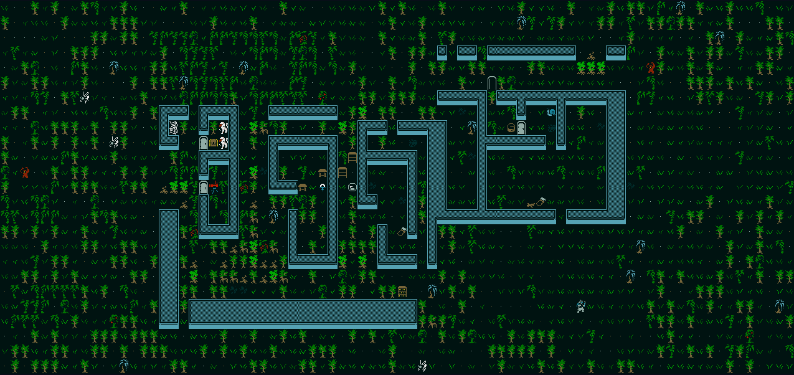
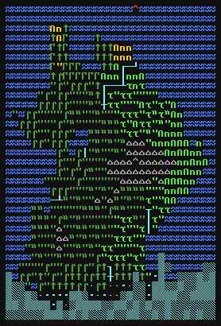

Introduction to Roguelikes

What is a roguelike?
First of all, it is my favorite genre of game! Second of all,
this is a question that has puzzled enjoyers of the genre for years, as the
term "Roguelike" gets applied to everything from the original Rogue to Fortnite.
Defining "Roguelike"
Developers and players at the International Roguelike Development Conference of 2008
argued for many hours about what defines a Roguelike, eventually deciding
on 13 key factors, known as the Berlin Interpretation:
- The world is randomly generated
- Death is permanent; you must create a new character after you die if you want to play again
- The game is turn based and grid based (like a board game)
- There is no meta progression; each new start is a blank slate with no impact from previous runs
- Actions are non-modal. You should be able to do any action regardless of game state (e.g, choosing to fight in a shop)
- The game is complex enough to allow multiple solutions to the same problem (more on this later!)
- You have to manage your limited resources (e.g. food, healing potions)
and find uses for the resources you receive
- Killing hoards of enemies must be a part of gameplay
- The world must be explored carefully by the player (unless you want to become familiar with rule 2)
- The player controls a single character and the game is singleplayer
- Enemies abide by the same rules as players (They can cast spells and throw grenades too, be careful!)
- The game is a tactical challenge, you have to learn and plan before you can make significant progress
- Graphics are minimal
Naturally, much has changed since 2008, and these rules are now seen as guidelines rather than
the law. Games that violate many of these rules are still seen as roguelikes by most in the modern day:
- The Binding of Isaac
- Vampire Survivors
- Rogue Legacy
- Brotato
- Inscryption
- Disfigure
What is the appeal?
For players
For developers
What goes into a Roguelike?
World Generation

Try a Roguelike!
This is Hebert Wolverson's Rusty Roguelike from his Make a Roguelike in Rust tutorial series. You can play it right here on my site!
Use the numpad to move, I for inventory, G to pick things up, and move into enemies/NPCs to attack/interact.
If you want to play a more fleshed-out roguelike, try Dungeon Crawl Stone Soup. It has over 300 different enemy types and 26 playable classes!
It's quite the learning curve though, so I recommend the wiki